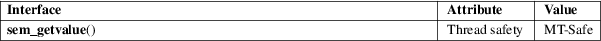

sem_getvalue − get the value of a semaphore
POSIX threads library (libpthread, −lpthread)
#include <semaphore.h>
int sem_getvalue(sem_t *restrict sem, int *restrict sval);
sem_getvalue() places the current value of the semaphore pointed to sem into the integer pointed to by sval.
If one or more processes or threads are blocked waiting to lock the semaphore with sem_wait(3), POSIX.1 permits two possibilities for the value returned in sval: either 0 is returned; or a negative number whose absolute value is the count of the number of processes and threads currently blocked in sem_wait(3). Linux adopts the former behavior.
sem_getvalue() returns 0 on success; on error, −1 is returned and errno is set to indicate the error.
|
EINVAL |
sem is not a valid semaphore. (The glibc implementation currently does not check whether sem is valid.) |
For an explanation of the terms used in this section, see attributes(7).

POSIX.1-2008.
POSIX.1-2001.
The value of the semaphore may already have changed by the time sem_getvalue() returns.
sem_post(3), sem_wait(3), sem_overview(7)